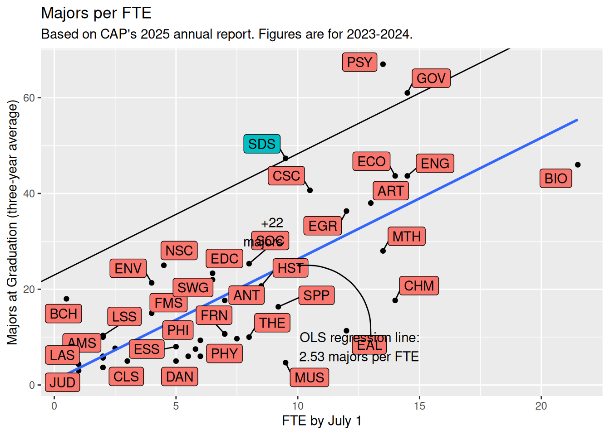

| AY | num_units | num_fte | num_majors | num_enrollees |
|---|---|---|---|---|
| 2014 | 51 | 0.00 | 831 | 19782 |
| 2015 | 51 | 0.00 | 826 | 19424 |
| 2016 | 51 | 0.00 | 895 | 18815 |
| 2017 | 51 | 0.00 | 839 | 19121 |
| 2018 | 51 | 275.55 | 842 | 19108 |
| 2019 | 51 | 279.70 | 844 | 19084 |
| 2020 | 51 | 279.70 | 922 | 19219 |
| 2021 | 51 | 279.20 | 796 | 17966 |
| 2022 | 51 | 279.20 | 805 | 20201 |
| 2023 | 51 | 280.40 | 864 | 19651 |
| 2024 | 51 | 311.00 | 842 | 19490 |
CAP
Big picture
I think the jump in FTE in 2024 is due to the reclassification on teaching-focused faculty.
FTE growth
Majors per FTE
Call:
lm(formula = majors_3 ~ fte, data = cap_recent)
Residuals:
Min 1Q Median 3Q Max
-20.367 -8.034 -0.435 4.866 31.834
Coefficients:
Estimate Std. Error t value Pr(>|t|)
(Intercept) 0.9687 3.2609 0.297 0.768
fte 2.5332 0.3715 6.818 3.36e-08 ***
---
Signif. codes: 0 '***' 0.001 '**' 0.01 '*' 0.05 '.' 0.1 ' ' 1
Residual standard error: 11.35 on 40 degrees of freedom
(9 observations deleted due to missingness)
Multiple R-squared: 0.5375, Adjusted R-squared: 0.5259
F-statistic: 46.48 on 1 and 40 DF, p-value: 3.365e-08# A tibble: 42 × 9
.rownames majors_3 fte .fitted .resid .hat .sigma .cooksd .std.resid
<chr> <dbl> <dbl> <dbl> <dbl> <dbl> <dbl> <dbl> <dbl>
1 41 67 13.5 35.2 31.8 0.0637 10.2 0.286 2.90
2 26 61 14.5 37.7 23.3 0.0778 10.8 0.193 2.14
3 44 47.3 9.5 25.0 22.3 0.0285 10.9 0.0584 1.99
4 6 18 0.5 2.24 15.8 0.0749 11.2 0.0845 1.44
5 11 40.7 10.5 27.6 13.1 0.0341 11.3 0.0244 1.17
6 37 25 4.5 12.4 12.6 0.0329 11.3 0.0218 1.13
7 19 21.3 4 11.1 10.2 0.0362 11.4 0.0159 0.919
8 15 43.7 14 36.4 7.23 0.0705 11.4 0.0166 0.661
9 18 43.7 14.5 37.7 5.97 0.0778 11.4 0.0127 0.548
10 16 23.3 6.5 17.4 5.90 0.0247 11.4 0.00351 0.527
# ℹ 32 more rows`geom_smooth()` using formula = 'y ~ x'Warning: Removed 9 rows containing non-finite outside the scale range
(`stat_smooth()`).Warning: Removed 9 rows containing missing values or values outside the scale range
(`geom_point()`).Warning: Removed 9 rows containing missing values or values outside the scale range
(`geom_label_repel()`).Warning: ggrepel: 8 unlabeled data points (too many overlaps). Consider
increasing max.overlaps
Enrollments
Warning: Removed 2 rows containing missing values or values outside the scale range
(`geom_point()`).Warning: Removed 2 rows containing missing values or values outside the scale range
(`geom_line()`).Enrollment per FTE
Warning: ggrepel: 27 unlabeled data points (too many overlaps). Consider
increasing max.overlaps